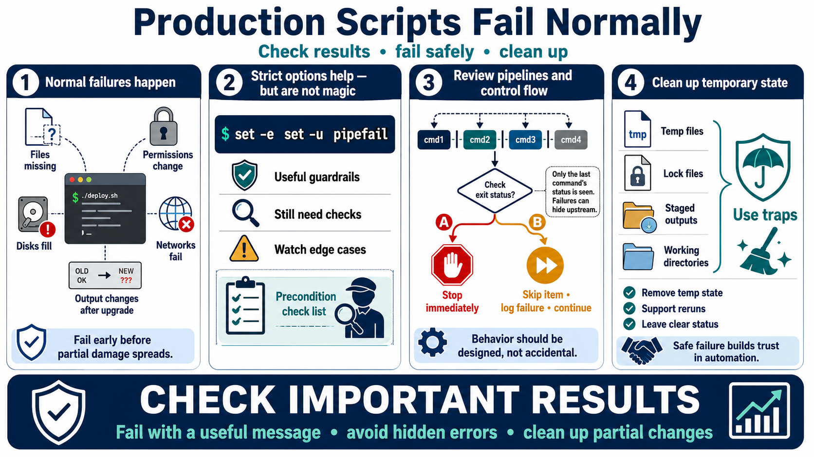

Error Handling and Safe Failure
Connecting to LMS... Progress: in progress

Narration
Production scripts fail for normal reasons. Files are missing, permissions change, disks fill, services restart, networks fail, and command output changes after an upgrade. Defensive shell programming means checking important results and stopping before a bad situation becomes worse. A script that fails early with a useful message is safer than a script that continues and leaves partial changes behind.
Strict shell options can help, but they are not a substitute for deliberate error handling. set -e can catch some failures, set -u can catch some unset variables, and pipefail can expose failures inside pipelines. Each option has tradeoffs and edge cases. Important operations still need clear precondition checks, intentional control flow, and messages that explain what the operator should inspect next.
Pipelines and compound commands deserve review because failures can be hidden if only the last command status is considered. A script should know which command matters and how failure should affect the workflow. In some cases, the safest behavior is to stop immediately. In other cases, the script can skip one item, record the failure, and continue processing other items. The behavior should be designed, not accidental.
Temporary state and partial changes need cleanup. A script that creates temporary files, lock files, staged outputs, or working directories should use traps or explicit cleanup paths where appropriate. Rerunnable behavior is valuable when practical because operators can recover without guessing which step completed. Safe failure makes automation easier to trust during real operations.